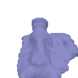

Task 1.5. Volume Rendering (20 points)
 |
|---|
Aman Chulawala
|
|---|
| Render | |||||
|---|---|---|---|---|---|
| Epoch | 20 | 40 | 60 | 80 | 100 |
Discuss the trade-offs between increased view dependence and generalization quality
Trade-offs:
To balance these trade-offs, it’s important to have a diverse set of training views and to possibly regularize the model to prevent overfitting.
Alpha and beta in the context of Signed Distance Functions (SDFs) and their impact on training and surface reconstruction.
Alpha:
The alpha parameter controls the density (or opacity) of the scene. It determines how much light is absorbed or scattered as it travels through the medium. A higher alpha value results in a denser medium, meaning that light has a harder time passing through it. This corresponds to regions in the scene where objects are more solid or opaque. In volume rendering, a higher alpha value would make the material appear more solid and less transparent. For example, in medical imaging, high alpha values might represent dense tissues like bones.
Beta:
The beta parameter controls the emission of light from the scene. It determines how much light is emitted from each point in the volume. A higher beta value leads to more light being emitted from the scene. This corresponds to regions where the material emits light (e.g., glowing objects, light sources). In volume rendering, high beta values create emissive materials (like neon signs or glowing lava). Low beta values result in non-emissive materials.
How does high beta bias your learned SDF? What about low beta?
When beta is high, the model tends to emphasize emissive regions. It becomes more sensitive to light sources and bright areas. However, this can lead to overfitting if the training data lacks diverse lighting conditions. When beta is low, the model focuses less on emissive regions. It may struggle to capture subtle lighting effects or glow. However, it might generalize better to different lighting conditions.
Would an SDF be easier to train with volume rendering and low beta or high beta? Why?
Training with low beta is generally easier because it reduces the complexity of the problem. The model doesn’t need to learn intricate lighting interactions. However, it might miss out on important emissive features. Training with high beta is more challenging due to increased sensitivity to lighting variations. The model must learn to handle diverse illumination conditions, which can lead to overfitting.
Would you be more likely to learn an accurate surface with high beta or low beta? Why?
For accurate surface reconstruction, low beta is preferable. It encourages the model to focus on geometric details rather than emissive effects. However, it might miss out on fine illumination nuances. While high beta captures emissive features well, it might introduce noise and artifacts. Achieving an accurate surface with high beta requires careful regularization and diverse training data.
| Render |  |
 |
|
|---|---|---|---|
| Geometry |  | ||
| Alpha | 1 | 10 | 10 |
| Beta | 1 | 1 | 0.05 |
Best Results
 |
 |
|---|
| No. of Views | NeRF Render | SDF Geometry | SDF |
|---|---|---|---|
| 100 |  |
 |
|
| 50 | |||
| 20 |